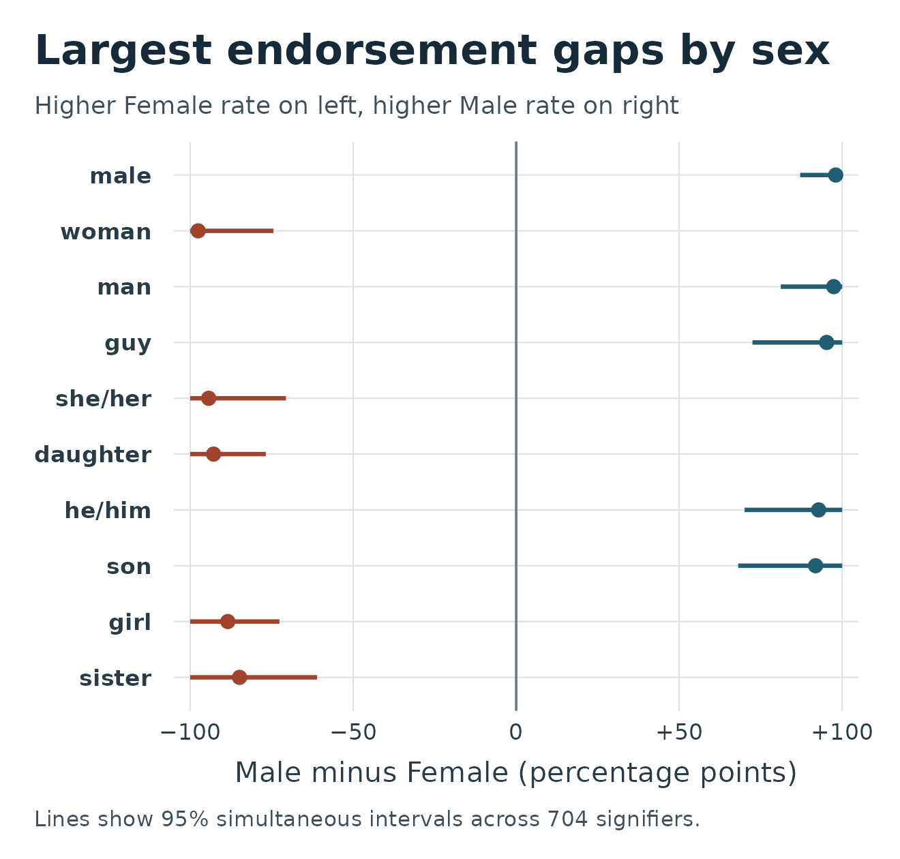

A daily study of the self
The Ten Largest Male–Female Endorsement Gaps

The widest gaps in Ipseity Daily were for sex and gender labels, pronouns, and family roles. The word male had the largest gap among eligible terms, followed closely by woman and man. Those terms are examples of what Ipseity Daily calls signifiers. Its survey asks American adults whether a given word or phrase describes them that day. The comparison here puts the answers in two groups based on self-reported sex in Prolific, the survey recruitment platform.
Who and what was counted
The snapshot covers 482 observation dates from July 8, 2025, through November 16, 2026. It contains 793,108 completed answers from 5,464 distinct respondents across 10,155 respondent-days. A respondent-day is one person's survey participation on one date. The Male and Female groups together supplied 787,987 answers, spanning 10,086 respondent-days and 5,413 distinct respondents. The comparison omitted 2,310 answers with a missing sex field and 2,811 with another reported value.
For each signifier, I divided the number of Yes answers by the number of completed Yes and No answers within each group. The survey assigns words in sets, so each word has its own pool of answerers. Skipped questions and words outside a person's assigned set contribute nothing to that word's denominator. Each completed answer carries equal weight in its group. Among respondents included in the comparison, 1,686 answered on multiple dates, so some people contributed more than once to an item's rate.
The ten largest gaps
Of 707 signifiers, 704 had at least 50 answers from at least 20 distinct respondents in each group. Within the ranked terms, sex-specific denominators ranged from 205 to 5,334 answers and from 183 to 3,019 distinct respondents. An answer count for a given term also counts respondent-days because a person can answer that term once per date.
Each entry gives the Male and Female Yes rates and their difference in percentage points. I ranked the signifiers by the size of that difference in either direction. The differences were calculated from the rates before rounding.
- male — Male 98.8%, Female 0.8% (+98.0 percentage points)
- woman — Male 1.0%, Female 98.5% (−97.5 percentage points)
- man — Male 98.6%, Female 1.2% (+97.4 percentage points)
- guy — Male 96.7%, Female 1.4% (+95.2 percentage points)
- she/her — Male 2.3%, Female 96.6% (−94.3 percentage points)
- daughter — Male 1.1%, Female 93.9% (−92.8 percentage points)
- he/him — Male 95.2%, Female 2.4% (+92.8 percentage points)
- son — Male 93.3%, Female 1.5% (+91.8 percentage points)
- girl — Male 1.2%, Female 89.6% (−88.5 percentage points)
- sister — Male 0.5%, Female 85.3% (−84.8 percentage points)
How to read the figure
Each dot shows the difference in Yes rates. Five dots fall to the left of zero, where the Female rate is higher, and five fall to the right, where the Male rate is higher. The horizontal lines show 95% simultaneous confidence intervals. The calculation keeps answers from the same respondent together, allowing for the possibility that their answers on repeated visits move together. It uses the number of answers each person contributed to account for how much those answers could move the gap.
Screening hundreds of signifiers creates more chances for an unusually large estimate to appear. The intervals account for that search by covering the full set of eligible gaps together. With the pattern of who answered each item held fixed and responses from different people assumed independent, the method is designed to cover all the underlying gaps at least 95% of the time. All ten displayed intervals stay on their respective sides of zero. The intervals for male and man, for example, span +87.1 to +100.0 and +81.1 to +100.0 percentage points. That overlap illustrates why the exact order is best read as a description of this snapshot.
What these gaps describe
The recorded sex field groups the answers. The Yes or No answer records whether the person felt the word fit that day. A term such as girl or guy can carry different meanings for different people, and the survey records the choice itself. The top gaps show that responses to these sex and gender-linked terms closely tracked the recorded groups in this sample.
Signifier sets can change across dates. The pooled rate for each word therefore reflects the particular mix of people and dates on which it was answered. The latest collection period may still be incomplete, and repeat participants have more influence on an item's estimate when they supply more answers. The rates use the available answers without survey weights. They describe an association within the surveyed sample. Survey recruitment and question assignment limit what the ranking can tell us about endorsement patterns across all U.S. adults.
Read the complete R analysis
library(tidyverse)
data_path <- Sys.getenv("IPSEITY_DATA_PATH", "data/ipseity.csv.gz")
min_observations <- 50L
min_respondents <- 20L
rank_count <- 10L
confidence <- 0.95
expected_columns <- c(
"endorsed", "signifier", "observation_date", "hashed_respondent_id",
"demographics_status", "age", "sex", "ethnicity", "birth_country",
"residence_country", "nationality", "language", "student", "employment",
"time_on_task", "approvals"
)
header <- read_csv(
data_path, n_max = 0, col_types = cols(.default = col_character()),
name_repair = "minimal", progress = FALSE
)
if (!identical(names(header), expected_columns)) {
stop("The CSV columns differ from the canonical schema in DATA.md.")
}
responses <- suppressWarnings(read_csv(
data_path,
col_types = cols_only(
endorsed = col_integer(), signifier = col_character(),
observation_date = col_date(format = "%Y-%m-%d"),
hashed_respondent_id = col_character(), demographics_status = col_character(),
sex = col_character()
),
na = c("", "NA"), trim_ws = FALSE, progress = FALSE
))
if (nrow(problems(responses)) > 0L ||
any(!responses$endorsed %in% c(0L, 1L)) ||
anyNA(responses$signifier) || anyNA(responses$observation_date) ||
anyNA(responses$hashed_respondent_id) ||
any(!responses$demographics_status %in% c("available", "consent_revoked", "data_expired")) ||
any(responses$demographics_status == "consent_revoked" & !is.na(responses$sex))) {
stop("Values in the analysis fields differ from the canonical documentation.")
}
if (anyDuplicated(select(responses, hashed_respondent_id, observation_date, signifier))) {
stop("The CSV contains a duplicate respondent-date-signifier key.")
}
responses <- responses |>
mutate(sex_category = factor(case_when(
is.na(sex) ~ "Missing",
sex %in% c("Male", "Female") ~ sex,
TRUE ~ "Other reported value"
), levels = c("Male", "Female", "Missing", "Other reported value")))
answered <- responses |> filter(sex_category %in% c("Male", "Female"))
sample_counts <- function(rows) {
rows |>
summarise(
observations = n(),
respondent_days = n_distinct(hashed_respondent_id, observation_date),
respondents = n_distinct(hashed_respondent_id),
.groups = "drop"
)
}
snapshot_sample <- sample_counts(responses)
comparison_sample <- sample_counts(answered)
sex_samples <- responses |> group_by(sex_category, .drop = FALSE) |> sample_counts()
participation <- answered |>
summarise(
dates = n_distinct(observation_date),
both_sex_values = any(sex_category == "Male") && any(sex_category == "Female"),
.by = hashed_respondent_id
)
# Keep every completed answer in its own signifier and recorded sex category.
# Contributions from the same respondent stay together, even across categories.
respondent_counts <- answered |>
mutate(
male_answer = sex_category == "Male",
female_answer = sex_category == "Female",
male_endorsement = male_answer & endorsed == 1L,
female_endorsement = female_answer & endorsed == 1L
) |>
summarise(
male_n = sum(male_answer),
male_yes = sum(male_endorsement),
female_n = sum(female_answer),
female_yes = sum(female_endorsement),
.by = c(signifier, hashed_respondent_id)
)
eligible <- respondent_counts |>
summarise(
male_respondents = sum(male_n > 0L),
female_respondents = sum(female_n > 0L),
male_n = sum(male_n),
male_yes = sum(male_yes),
female_n = sum(female_n),
female_yes = sum(female_yes),
.by = signifier
) |>
filter(
male_n >= min_observations, female_n >= min_observations,
male_respondents >= min_respondents, female_respondents >= min_respondents
) |>
mutate(
male_rate = male_yes / male_n,
female_rate = female_yes / female_n,
gap = male_rate - female_rate
)
if (nrow(eligible) < rank_count) {
stop("Too few signifiers meet the sample requirements for the requested ranking.")
}
# For fixed signifier response counts, the range of a respondent's possible
# contribution to the difference is n_i,M / N_M + n_i,F / N_F. A two-sided
# Hoeffding bound treats respondents as independent and allows arbitrary
# dependence within a respondent. Bonferroni covers all eligible signifiers.
cluster_ranges <- respondent_counts |>
inner_join(
select(eligible, signifier, male_total = male_n, female_total = female_n),
by = "signifier", relationship = "many-to-one"
) |>
summarise(
squared_ranges = sum((male_n / male_total + female_n / female_total)^2),
.by = signifier
)
top <- eligible |>
left_join(cluster_ranges, by = "signifier", relationship = "one-to-one") |>
mutate(
half_width = sqrt(squared_ranges * log(2 * nrow(eligible) / (1 - confidence)) / 2),
lower = pmax(-1, gap - half_width),
upper = pmin(1, gap + half_width)
) |>
arrange(desc(abs(gap)), signifier, .locale = "C") |>
slice_head(n = rank_count) |>
mutate(rank = row_number())
if (any(str_detect(top$signifier, "[[:cntrl:]@]|\\b[[:xdigit:]]{12}\\b|https?://"))) {
stop("A selected signifier contains a character or pattern unsuitable for publication.")
}
count_lines <- function(label, counts) {
sprintf(
"%s\t%d\t%d\t%d",
label, counts$observations, counts$respondent_days, counts$respondents
)
}
result_lines <- c(
"Male–Female endorsement differences in the Ipseity Daily snapshot",
sprintf(
"Snapshot dates: %s through %s (%d observed dates)",
min(responses$observation_date), max(responses$observation_date),
n_distinct(responses$observation_date)
),
sprintf(
"Male or Female answer dates: %s through %s (%d observed dates)",
min(answered$observation_date), max(answered$observation_date),
n_distinct(answered$observation_date)
),
"Sample\tResponse observations\tRespondent-days\tUnique respondents",
count_lines("Full snapshot", snapshot_sample),
count_lines("Male or Female", comparison_sample),
count_lines(as.character(sex_samples$sex_category), sex_samples),
sprintf("Male or Female respondents answering on multiple dates: %d", sum(participation$dates > 1L)),
sprintf("Respondents with both Male and Female records: %d", sum(participation$both_sex_values)),
sprintf("Signifiers in the snapshot: %d", n_distinct(responses$signifier)),
sprintf("Signifiers with a Male or Female answer: %d", n_distinct(answered$signifier)),
sprintf("Minimum per signifier and sex: %d observations and %d respondents", min_observations, min_respondents),
sprintf("Eligible signifiers: %d", nrow(eligible)),
sprintf("Snapshot signifiers outside the ranking: %d", n_distinct(responses$signifier) - nrow(eligible)),
sprintf("Ranked signifiers shown: %d", nrow(top)),
sprintf("Among those shown, higher Male rate: %d; higher Female rate: %d", sum(top$gap > 0), sum(top$gap < 0)),
sprintf("Ranked sex-specific answer counts: %d to %d", min(top$male_n, top$female_n), max(top$male_n, top$female_n)),
sprintf("Ranked sex-specific unique-respondent counts: %d to %d",
min(top$male_respondents, top$female_respondents), max(top$male_respondents, top$female_respondents)),
sprintf("Simultaneous confidence level: %.0f%%", 100 * confidence),
sprintf("Shown intervals excluding zero: %d", sum(top$lower > 0 | top$upper < 0)),
"",
"Rates are per completed answer. For a given signifier and sex, response observations equal respondent-days.",
"Difference is Male minus Female in percentage points; ranked on absolute magnitude before rounding.",
"Intervals use respondent-cluster Hoeffding bounds with Bonferroni adjustment across all eligible signifiers.",
paste(
"Rank", "Signifier", "Male Yes", "Male observations", "Male respondents", "Male rate (%)",
"Female Yes", "Female observations", "Female respondents", "Female rate (%)",
"Gap (pp)", "Lower (pp)", "Upper (pp)", sep = "\t"
),
sprintf(
"%d\t%s\t%d\t%d\t%d\t%.1f\t%d\t%d\t%d\t%.1f\t%+.1f\t%+.1f\t%+.1f",
top$rank, top$signifier, top$male_yes, top$male_n, top$male_respondents, 100 * top$male_rate,
top$female_yes, top$female_n, top$female_respondents, 100 * top$female_rate,
100 * top$gap, 100 * top$lower, 100 * top$upper
)
)
plot_data <- top |>
mutate(
plot_label = factor(signifier, levels = rev(signifier)),
higher_rate = if_else(gap > 0, "Male", "Female")
)
gap_figure <- ggplot(plot_data, aes(x = 100 * gap, y = plot_label, color = higher_rate)) +
geom_vline(xintercept = 0, color = "#697786", linewidth = 0.6) +
geom_linerange(aes(xmin = 100 * lower, xmax = 100 * upper), linewidth = 1.1) +
geom_point(size = 3.1) +
scale_color_manual(values = c(Female = "#A0442D", Male = "#215E74"), guide = "none") +
scale_x_continuous(
limits = c(-105, 105), breaks = seq(-100, 100, by = 50),
labels = c("\u2212100", "\u221250", "0", "+50", "+100"), expand = expansion(mult = 0)
) +
labs(
title = "Largest endorsement gaps by sex",
subtitle = "Higher Female rate on left, higher Male rate on right",
x = "Male minus Female (percentage points)",
y = NULL,
caption = sprintf("Lines show %.0f%% simultaneous intervals across %d signifiers.", 100 * confidence, nrow(eligible))
) +
theme_minimal(base_size = 15, base_family = "sans") +
theme(
plot.title.position = "plot",
plot.caption.position = "plot",
plot.title = element_text(size = 22, face = "bold", color = "#162B3A"),
plot.subtitle = element_text(size = 13, color = "#3E4E5A", margin = margin(t = 5, b = 12)),
axis.text = element_text(color = "#283B49"),
axis.text.y = element_text(face = "bold", margin = margin(r = 8)),
axis.title.x = element_text(color = "#283B49", margin = margin(t = 9)),
panel.grid.major = element_line(color = "#D9E2E8", linewidth = 0.35),
panel.grid.minor = element_blank(),
plot.caption = element_text(hjust = 0, size = 11.5, color = "#3E4E5A", margin = margin(t = 12)),
plot.margin = margin(18, 22, 15, 18)
)
ggsave("visualization.png", gap_figure, width = 6.6, height = 6.3, dpi = 200, bg = "white")
writeLines(enc2utf8(result_lines), "results.txt", useBytes = TRUE)
Original research prompt
Report the 10 signifiers with the largest Male-Female endorsement rate difference.
Dataset SHA-256: 9d876e7755198144adcb39b2ad5bee754fa2ec9f5d1ebbf3078bfe2fe4d546af